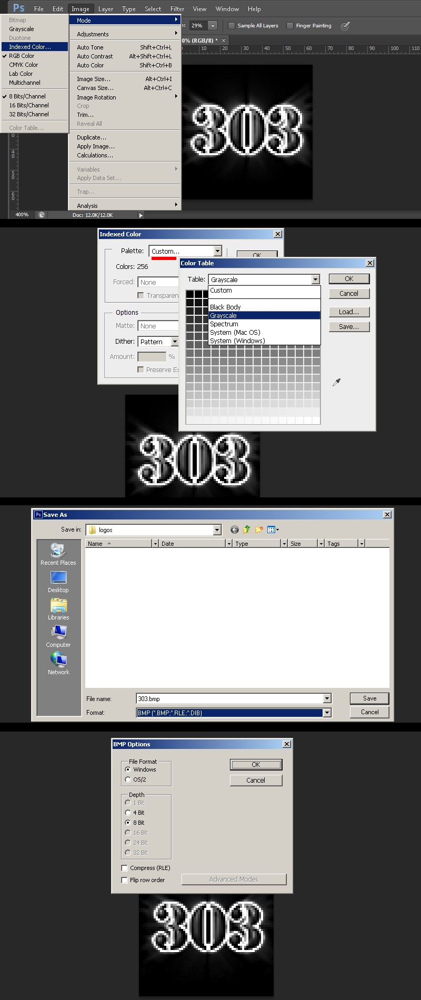
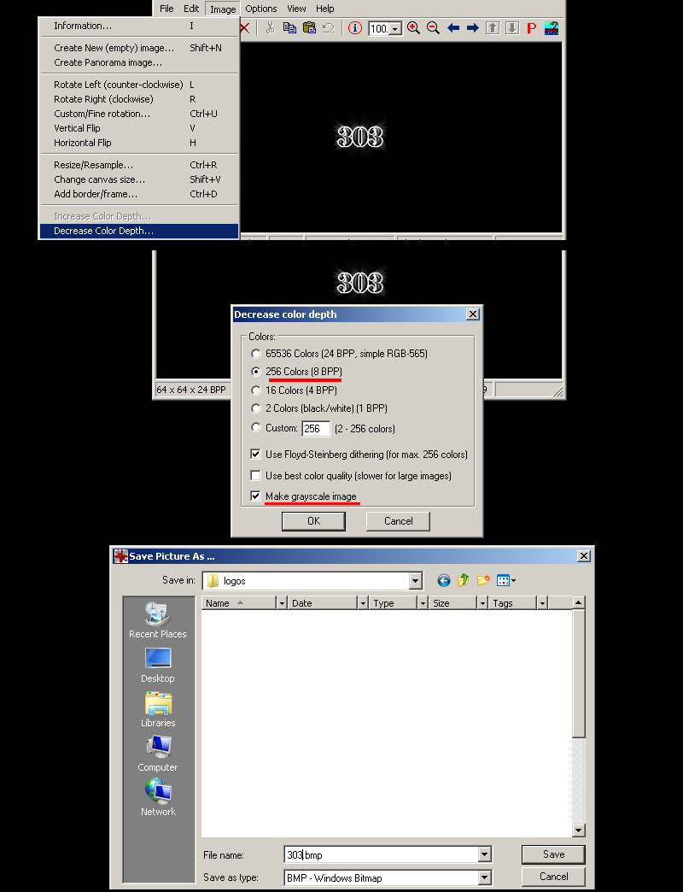
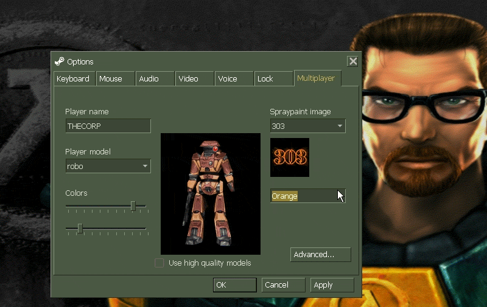
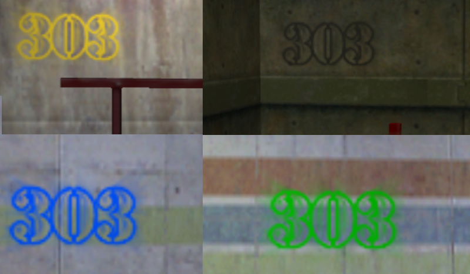

Our first tutorial is creating a standard color remappable spraylogo. These spraylogos are very low resolution but are simple to make and install.
1) Begin with a black 64X64 pixel canvas and paint in only black and white. When done got to Image > mode > index. Go to the palette rollout and then switch local to "custom" palette and at the top change to the "Grayscale" preset and hit okay.
2) Save the now indexed image as a BMP in the half-life "logos" folder:
C:\Program Files (x86)\Steam\steamapps\common\Half-Life\valve\logos
Hit okay for the 8-bit BMP format dialog.

2a) If you do not have Photoshop, the common option for making an indexed color image is "save as 8bit", "255 colors", or "indexed". If your program is lacking in creating a decent palette or cannot save properly, you can save out your image as a 24bit BMP and use IRFANVIEW to do the 8bit conversion.

3) Launch the game then under the multiplayer tab and select the name of your spray then select the color. Shown here is the various colors avalible:

